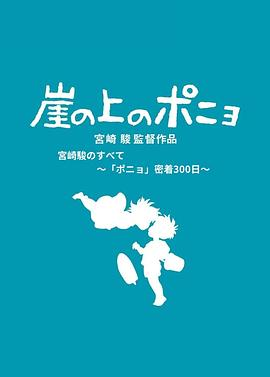

聚焦宫崎骏与“波妞”300天亲密接触 / プロフェッショナル 仕事の流儀 スペシャル 宮崎駿のすべて ～「ポニョ」密着300日～
又名：プロフェッショナル 仕事の流儀 special summer edition 宮崎駿のすべて〜「ポニョ」密着300日〜
想起来高中的时候买的一本《动新》里面有这个CD，然后就看了，当时感觉这老头和他儿子有什么仇 =。=
作品信息
| 导演 | NHK |
| 编剧 | NHK |
| 主演 | 宫崎骏 / 近藤胜也 / 吉田升 / 铃木敏夫 / 高畑勋 / 久石让 |
| 类型 | 纪录片 |
| 制片国家/地区 | 日本 |
| 语言 | 日语 |
| 上映日期 | 2008-08-05(日本) |
| 片长 | 87分钟 |
| IMDb | tt1269307 |
最后一次看到是 2026-08-01T11:06:22+10:00 · 豆瓣原页